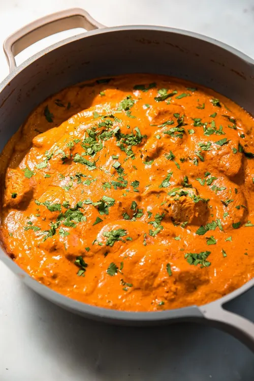

Butter Chicken
Description
Butter Chicken, also known as Murgh Makhani, is a popular Indian dish that originated in Delhi. It's a rich and creamy curry made with tender chicken pieces cooked in a tomato-based sauce with butter and cream. This dish is known for its mild spice level and smooth texture, making it a favorite among both Indian and international food lovers.
Ingredients
- 500g boneless chicken, cut into pieces
- 1 cup yogurt
- 2 tablespoons lemon juice
- 2 teaspoons garam masala
- 1 teaspoon turmeric
- 1 teaspoon chili powder
- 2 tablespoons butter
- 1 large onion, chopped
- 3 cloves garlic, minced
- 1 tablespoon ginger, grated
- 1 can (400g) tomato puree
- 1 cup heavy cream
- Salt to taste
- Fresh coriander for garnish
Cooking Instructions
- Marinate the chicken pieces in yogurt, lemon juice, garam masala, turmeric, and chili powder for at least 2 hours, preferably overnight.
- Preheat oven to 200°C (400°F). Place marinated chicken on a baking tray and bake for 20-25 minutes until cooked through.
- In a large pan, melt butter over medium heat. Add onions and cook until golden brown.
- Add garlic and ginger, cook for 1 minute until fragrant.
- Stir in tomato puree and cook for 5 minutes.
- Add the baked chicken pieces to the sauce and simmer for 10 minutes.
- Stir in heavy cream and simmer for another 5 minutes.
- Garnish with fresh coriander and serve hot with naan or rice.